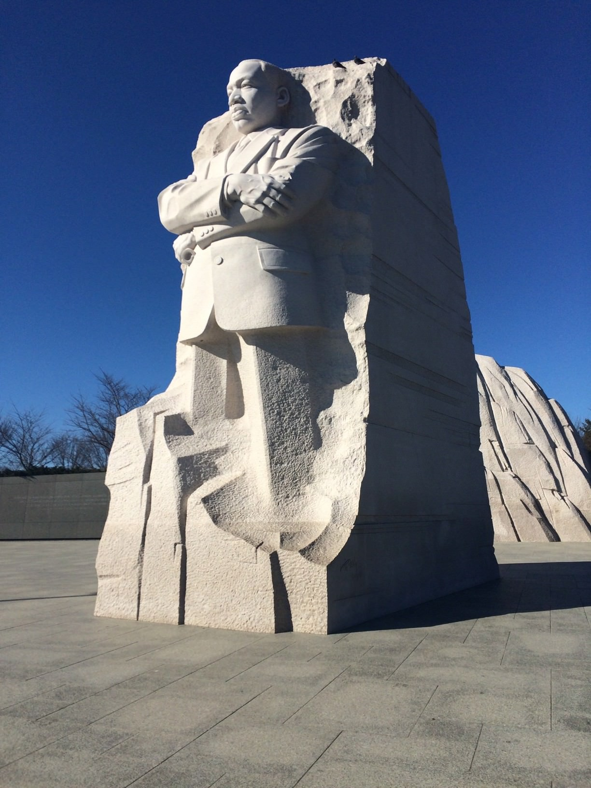

Reading #3 -- Artifacts
Q1. From the podcast, how has our understanding of what dinosaurs really look like evolved? Describe the progression of how we portrayed them and how might this affect our understanding of what Archeology is saying about them.
Our understanding of dinosaurs’ appearance and behaviors has drastically changed over the course of time. Dinosaurs were generally depicted as enormous swamp lizards that were too large to move around and were a bit dumb. This was the general consensus of how dinosaurs looked to the public, despite there being a few archeologists that might have thought otherwise. In the late 60’s Bob Bakker, his professor Jon Ostrom, and some other students from Yale went on a dig and discovered a new species of raptor there, the Deinonychus. After studying the anatomy of the new dinosaurs Professor Ostrom asserted that dinosaurs closer resembled large athletic birds instead of sluggish lizards. With this assertion, Bakker decided to draw dinosaurs depicted as intelligent and energetic creatures, with the support of academic papers these draws catalyst the start of the Dinosaur Renaissance. In the 1970s dinosaurs were depicted as warm-blooded, intelligent, and bird-like, with the addition of bright colors and feather textures. The film Jurassic Park (1993), created an image of how dinosaurs should look to the general public. With new findings and discoveries muscle fat and tissues new evidence to suggest that there were futures much like animals we see today.
Q2. The artist/archaeologist John Conway who is doing interpretations of dinosaurs is obviously taking liberty with what could be the actual truth of how these creatures existed. What other fields of science, creative-based disciplines, and forms of studies use similar techniques that remind you of this method or process. Please elaborate with your examples both written as well as images and links.
https://en.wikipedia.org/wiki/Ancestral_PuebloansAnother field of science where ideas are constructed by interpretations of the evidence that is present is in Anthropology and it’s depictions of how people lived in ancient civilizations. Ruins of civilizations are left from people who lived centuries ago, not much is left where home might have once stood with the exception of a few artifacts. Anthropologists construct inferences on how these people may have lived life, what they ate, drank, and what they might have done with these certain artifacts. A specific example of this can be seen with the case of the Ancestral Puebloans in Arizona,Colorado, New Mexico, and Utah. Many of these indigeiouns peoples lived in pit-styled houses called pueblos, this was inferred by the ruins found in the desserts of these states.
This is the Pueblo Bonito the largest of the Chacoan Great Houses, stands at the foot of Chaco Canyon's northern rim. With the artifacts as wall carvings, pottery, and tools found here Anthropologist can only infer what was done in these spaces and what they were used for based on the evidence they find in these ancient civilizations.